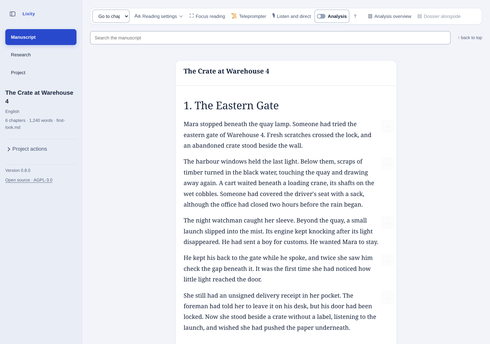

Ler o ritmo.
Compare capítulos, examine o comprimento das frases e encontre repetições próximas. Volte ao texto para decidir o que importa.
Explorar a demonstraçãoLeia de perto. Explore a língua.
Compreenda como funciona o seu texto. Explore ritmo e vocabulário, compare capítulos e regresse à passagem por trás de cada observação. Um espaço local para escrever, rever e analisar a língua.
Manuscrito fictício em inglês. Demonstração só de leitura. Sem conta nem envio de ficheiros.

Compare capítulos, examine o comprimento das frases e encontre repetições próximas. Volte ao texto para decidir o que importa.
Explorar a demonstraçãoExplore o comprimento das frases, a diversidade lexical e a legibilidade. Examine as passagens contadas no seu contexto e exporte JSON para análises reproduzíveis com perfis linguísticos e definições explícitos.
Percurso de análise de texto (inglês)Ligue fontes, afirmações e decisões a uma cena. Consulte os elementos guardados quando um detalhe precisar de outro olhar.
Visita guiada (inglês)Prepare um PDF, um espaço de revisão ou uma cópia de leitura com notas selecionadas. O projeto original continua nas suas mãos.
Reading copy (English)Os padrões ajudam a colocar perguntas mais precisas sobre um texto. As contagens descrevem o material fornecido; as heurísticas precisam de contexto. O Lixity não atribui notas à qualidade literária, não comprova autoria nem reescreve a sua prosa.
Instale o Lixity localmente no Windows, macOS ou Linux. Comece com Markdown ou texto simples e siga o guia de instalação.
Guia de instalação (inglês)uv tool install --python 3.12 --managed-python lixityEste site apresenta a versão em desenvolvimento. Consulte a versão publicada para conhecer as funções disponíveis; os serviços opcionais têm limites de dados próprios.
Published releases · v0.8.0 release notesEste site está disponível em sete línguas. A aplicação segue o perfil de análise escolhido; a língua dos relatórios CLI é configurada separadamente. A documentação técnica mantém-se em inglês.
Os recursos de análise e a validação variam consoante o idioma. O alemão e o inglês têm a cobertura mais ampla. Traduzir a interface não traduz o manuscrito.
Technical guides, methods and automation contracts are maintained in English.
Conte-nos que passagem queria investigar e onde a explicação ajudou ou dificultou o trabalho. Não precisa de partilhar o manuscrito.
Enviar comentários